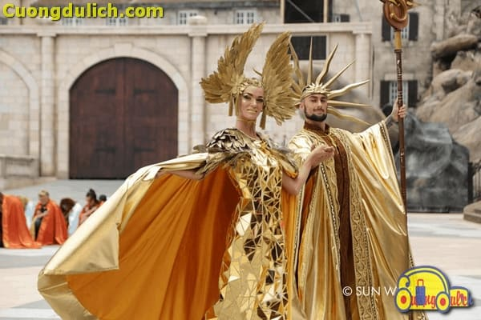

Đà Nẵng
20 Trải Nghiệm Tại Bà Nà Hills Mà Cả Đời Bạn Cũng Không Quên Được
Bà Nà Hills từ lâu đã là địa điểm du lịch Đà Nẵng nổi như cồn, thế nhưng không phải du khách nào cũng biết được “Bà Nà Hills có gì chơi?”. Nghe thì có vẻ đơn giản lắm, cầu vàng, hầm rượu, làng Pháp ai mà chẳng biết. Tuy nhiên, mới vậy thì chưa đủ đâu các bạn ạ. Hãy dành 5 phút để đọc bài viết này và khám phá “ 20 trải nghiệm tại Bà Nà Hills mà cả đời bạn cũng không quên được”.
1. Ngồi cáp treo Bà Nà Hills ngắm toàn cảnh núi Chúa
Hệ thống cáp treo của Sun World Ba Na Hills được CNN bình chọn là 1 trong 10 tuyến cáp treo ấn tượng nhất thế giới. Ngồi trong cabin cáp treo Bà Nà, bạn sẽ được nhìn ngắm toàn bộ không gian rộng lớn của Bà Nà như một bức tranh hoàn mỹ với mây, núi rừng và những thác nước hùng vỹ phía dưới. Đây mới chỉ là trải nghiệm đầu tiên khi đến với Bà Nà Hills mà đã đi một lần thì bạn sẽ không bao giờ quên được.
2. Cầu Vàng – Một trong những cây cầu đẹp nhất thế giới
Nằm ở độ cao 1.414 mét so với mực nước biển, Cầu Vàng được thiết kế vô cùng ấn tượng, vẽ nên một cung đường đầy mê hoặc giữa lưng chừng trời, dài gần 150 mét. Tọa lạc tại Vườn Thiên Thai, Cầu Vàng được xem là điểm trung chuyển đặc biệt giúp du khách di chuyển thuận tiện từ khu vực chân núi hay làng Pháp đến vườn hoa Le Jardin D’Amour. Mặt cầu rộng 12,8m, dài gần 150m, gồm 8 nhịp, nhịp dài nhất: 21,2m.
Không cần bắc qua bất kỳ con sông nào, Cầu Vàng vẫn được The Guardian xếp vào đội ngũ “cây cầu đi bộ ngoạn mục nhất thế giới”. Cánh tay khổng lồ đầy rêu phong đỡ lấy dải lụa vàng vắt ngang bầu trời đỉnh núi Chúa, Cầu Vàng nhanh chóng trở thành “cơn sốt” của du lịch Việt Nam và thế giới ngay từ những ngày đầu ra mắt. Đây chắc chắn là trải nghiệm chỉ có tại Bà Nà Hills mà bạn khó lòng tìm thấy được ở nơi khác.
3/ Vườn hoa Le Jardin D’amour màu sắc với 9 khu vực
9 thảm hoa đầy sắc màu, lãng mạn của vườn hoa Le Jardin D’amour chắc chắn sẽ khiến bạn mê mẩn và nháy ảnh không ngơi tay. Vườn hoa Le Jardin được chia làm 9 khu vườn nhỏ với kiến trúc và trang trí theo chủ đề, phong cách khác nhau tạo nên thiên đường đầy mơ mộng, sáng tạo và đầy lý thú cho du khách ghé thăm.
Ngay từ khi bước chân vào khu vườn này, bạn đã thấy những bông hoa đầy hương sắc tạo nên một khung cảnh hết sức lãng mạn cho các cô nàng, cặp đôi, nhóm bạn lưu giữ kỷ niệm. Cũng tại vườn hoa Le Jardin của Bà Nà Hills đã cho ra đời hàng nghìn bức ảnh sống ảo đẹp mê mẩn. Bạn đã sẵn sàng là người tiếp theo có những bức hình lay động lòng người bên ngàn hoa khoe sắc hay chưa?
4/ Hầm rượu Debay 100 tuổi
Nằm sâu trong núi trên Bà Nà Hills, dài tới 100m, hầm rượu 100 tuổi Debay Ba Na Hills là điểm đến cực kỳ lý thú dành cho du khách ghé thăm Bà Nà. Thiên đường rượu vang này được xây dựng từ những năm 1923 với chiều cao tới 2,5m, rộng 2m. Vách hầm xây bằng đá núi với vữa là hỗn hợp nhựa cây và đường, cực kỳ độc đáo.
Du khách có thể lên tầng 2 của hầm rượu Debay để thưởng thức những ly rượu vang thơm lừng, sóng sánh cùng những xiên thịt thơm ngon trong khung cảnh mây núi thiên nhiên ngút ngàn và muôn hoa khoe sắc thắm. Phải nói thật, mỗi lần đi qua khu vực này Cuồng du lịch không thể cưỡng lại được mùi thơm hấp dẫn từ những xiên đồ nướng.
5/ Chùa Linh Ứng linh thiêng ở độ cao gần 1.500m
Đến với khu du lịch Bà Nà Hills, không một du khách nào lại không muốn ngắm tượng phật cao nhất Đà Nẵng này. Nằm tại địa thế linh thiêng, thơ mộng trên đỉnh Bà Nà, Chùa Linh Ứng là điểm đến tâm linh, đem tới sự nhẹ nhàng và bình yên trong tâm hồn du khách. Kết hợp với Chùa Linh Ứng Sơn Trà và Chùa Linh Ứng Ngũ Hành Sơn, Chùa Linh Ứng Bà Nà tạo nên thế kiềng 3 chân vững vàng bảo vệ, che chở cho người dân Đà Nẵng.
Phía trước của chùa có loại thông quý 3 lá nằm trong sách đỏ Việt Nam. Du khách đến chùa Linh Ứng Bà Nà vừa có thể cầu nguyện bình an vừa có thể ngắm cảnh thiên nhiên tuyệt mỹ của đỉnh núi Chúa cùng chiêm ngưỡng giống thông quý hiếm có
Đặc biệt, ngay phía trước mặt tượng phật, bạn sẽ được ngắm khung cảnh có một không hai, giống như đang đứng ở cổng trời vậy, mây trời trong xanh hòa quyện với núi rừng – một bức tranh non nước không kém cạnh gì khi đứng ở Cầu Vàng.
6/ Cầu Tình Yêu
Là địa điểm sống ảo quen thuộc tại khu du lịch Bà Nà Hills của các cặp đôi, Cầu Tình Yêu luôn lãng mạn và nổi bật ngay cạnh lối đi đến vườn hoa Le Jardin D’Amour. Cầu Tình Yêu không quá rộng cũng chẳng quá dài cũng được các nhóm bạn bè nghịch ngợm tạo ra những bức ảnh kỷ niệm ấn tượng.
7/ Làng Pháp – Linh hồn Ba Na Hills
Điểm đến sau cùng của tuyến cáp treo Bà Nà Hills đưa bạn dừng chân tại Làng Pháp. Sở hữu những tòa nhà cổ kính theo kiến trúc Pháp, làng Pháp Ba Na Hills được ví như một nước Pháp thu nhỏ đầy xa hoa, lãng mạn, đưa du khách lạc vào không gian nước Pháp thời trung cổ. Làng Pháp có diện tích rộng lớn tới hơn 45.000 m2 với nhà thờ, thị trấn và những ngôi làng sinh động. 32 tòa nhà đầy lộng lẫy, tráng lệ của làng Pháp là nơi cho ra đời hàng nghìn hàng triệu bức ảnh sống ảo đầy ấn tượng của nhiều du khách. Khung cảnh đầy lãng mạn, nên thơ mang hơi thở châu Âu tại làng Pháp Bà Nà Hills khiến nhiều du khách “đi quên lối về”.
8/ Vườn Tượng và Vườn Hoa Hồng
Tọa lạc gần với khu vui chơi Fantasy, nhưng đây lại là địa điểm tham quan không phải du khách nào cũng để ý. Bởi bạn sẽ bước lên chừng 20 bậc đá mới tới nơi, một khu vườn hồng với hàng chục loại, cùng màu sắc hiện ra. Thực sự là một khung cảnh tuyệt đẹp mà Cuồng cứ muốn lưu mãi ở đây.
Đi xuống phía dưới bạn sẽ thấy Vườn Tượng có 12 bức tượng cung Hoàng Đạo cùng nhiều loài hoa đua nhau khoe sắc. Đến đây Cuồng cứ ngỡ đang ở trên thiên đường vậy, chụp lại những bức ảnh lưu niệm đăng face không ai tin bạn đang ở Việt Nam cả.
9/ Công viên Fantasy Park – Điểm vui chơi tuyệt vời cho gia đình
Khu du lịch Bà Nà Hills có gì chơi? Câu trả lời cho bạn đây. Là khu vui chơi trong nhà lớn nhất Việt Nam, công viên Fantasy Park là điểm vui chơi tuyệt vời cho cả gia đình. Công viên có tới 100 trò chơi hấp dẫn cực đã phù hợp với mọi lứa tuổi, mang đến những phút giây thư giãn, giải trí bất tận.
Công viên Fantasy Park được xây dựng theo cảm hứng của 2 cuốn tiểu thuyết nổi tiếng “Hai vạn dặm dưới đáy biển” và “Hành trình vào trung tâm Trái Đất” của nhà văn Pháp tài năng Jules Verne. Công viên Fantasy Park mở ra một thế giới đầy hấp dẫn, sôi động đem tới nhiều cảm xúc cho người chơi và là điểm vui chơi không nên bỏ qua khi ghé thăm Bà Nà Hills.
10/ Bảo tàng sáp đầu tiên tại Việt Nam
Tự hào là bảo tàng tượng sáp đầu tiên tại Việt Nam, bảo tàng sáp Bà Nà thu hút lượng lớn du khách ghé thăm mỗi năm. Đến với bảo tàng tượng sáp tại Bà Nà Hills, bạn như được lạc vào thế giới muôn màu cùng các nhân vật cực kỳ nổi tiếng trong lĩnh vực thể thao, ca nhạc, điện ảnh và chính trị… Bàn tay khéo léo của các nghệ nhân người Ý đem tới các tác phẩm tượng đẹp tinh xảo, giống “y đúc” phiên bản đời thực.
11/ Linh Phong Bảo Tháp – 9 tầng chạm mây
Hiên ngang giữa mây trời Bà Nà cao gần 1.500m so với mực nước biển, 9 tầng của Linh Phong Bảo Tháp Ba Na Hills đều có tượng Đức Phật Thích Ca Mâu Ni hoàn toàn bằng đá trắng ở cả 4 mặt Đông – Tây – Nam – Bắc. Xung quanh tháp là tượng Tứ Đại Thiên Vương đầy hiên ngang, uy phong trấn giữ, bảo vệ.
Mỗi tầng tháp có 4 chiếc chuông đồng treo ở 4 góc, hàm ý cho âm vang đầy linh thiêng của Linh Phong Bảo Tháp giữa trời đất ngút ngàn. Du khách ghé thăm Bà Nà Hills không nên bỏ qua địa điểm tâm linh đầy uy nghiêm này nha.
12/ Trú Vũ Trà Quán – Chốn yên bình giữa xô bồ cuộc sống
Tách biệt với sự sôi động, náo nhiệt của phần lớn khu vui chơi Ba Na Hills, Trú Vũ Trà Quán như chốn riêng rất yên bình để thưởng trà ngắm cảnh mây trời đỉnh núi Chúa. Tại Trú Vũ Trà Quán của Bà Nà Hills, du khách có thể chiêm ngưỡng vẻ đẹp tuyệt mỹ của rừng nguyên sinh đại ngàn cùng quang cảnh lộng lẫy của làng Pháp.
Trà quán xây dựng hoàn toàn theo kiến trúc miền Bắc truyền thống. Bên trong, những bộ bàn thấp vuông kết hợp âm nhạc nhẹ nhàng đem tới không gian thiền hoàn hảo cho du khách ghé thăm. Thưởng trà ngắm cảnh như những cao nhân ẩn mình tại đây chắc chắn sẽ là trải nghiệm mà bạn không bao giờ quên được khi đến với Bà Nà Hills.
13/ Tàu hỏa leo núi – cheo leo giữa vách núi hùng vĩ
Nghe đã thấy thú vị phải không bạn? Tàu hỏa leo núi sẽ là hành trình tuyệt vời cho những ai thích mạo hiểm khám phá. Băng qua vách núi cheo leo, những con đường uốn lượn quanh co giữa đại ngàn, chuyến tàu hỏa đưa du khách tới những điểm đến thu hút và ấn tượng trên đỉnh Bà Nà.
Cuồng du lịch vẫn còn nhớ, ngồi trên tàu hỏa leo núi hôm đó có các bạn trẻ, họ đứng ở toa cuối vừa cười vừa hát thật sôi động khiến chuyến tàu hỏa leo núi tại Bà Nà Hills ngày hôm đó như có sức sống, như thú vị hơn bao giờ hết.
14/ Beer Plaza
Giống như gã khổng lồ ở xứ sở ham vui nào đó đã đánh rơi thùng bia vàng xuống đỉnh núi Chúa trong cơn say sỉn, Beer Plaza tại Bà Nà Hills gây ấn tượng với du khách bởi thùng bia khổng lồ bằng thuỷ tinh màu vàng gold lấp lánh, một nửa nằm sâu dưới lòng núi, nửa còn lại nổi lên mặt sàn tạo thành một nhà hàng độc đáo.
Những tấm kính ban ngày giống như ô cửa sổ trong veo, để những tia nắng dịu dàng ghé qua, ban đêm lại tựa như màn hình led phản chiếu những cuộc vui quên lối về tại nhà hàng. Beer Plaza đích thực là điểm đến tại Bà Nà Hills mà bạn không nên bỏ qua.
15/ Xe Trượt Ống
Bạn là người đam mê tốc độ và muốn tìm cảm giác mạnh trên cao? Hãy thử điều khiển xe trượt ống tại khu du lịch Bà Nà Hills, len lỏi qua những cung đường xoắn ốc đầy thách thức. Được thiết kế an toàn tuyệt đối cùng 2 vòng xoáy kép duy nhất tại Việt Nam, trò chơi này là lựa chọn hàng đầu của hầu hết du khách tham quan Sun World Ba Na Hills.
16/ Đền Lĩnh Chúa Linh Từ
Đền Lĩnh Chúa Linh Từ là nơi thờ tự, ghi nhớ Công đức của Bà Chúa Thượng Ngàn đã che chở cho Bà Nà Hill. Du khách tới đền –nơi giao thoa của trời đất, nơi âm dương hội tụ- để tìm an yên giữa những bộn bề của cuộc sống.
17/ Lễ hội hoa – Xứ sở Muôn hoa (tháng 1 – tháng 3)
Thời gian diễn ra: 20/01 – 31/03 hằng năm tại vườn Le Jardin d’Amour
Lễ hội hoa tại Bà Nà Hills được lấy cảm hứng từ xứ sở Hà Lan – xứ sở của các loài hoa, Lễ hội hoa Ba Na Hills đem tới không gian lộng lẫy sắc màu với 1 triệu bông hoa tulip và 57 giống hoa quý hiếm
Gom cả mùa xuân lên đỉnh Bà Nà, lễ hội hoa Ba Na Hills đem tới không gian ngập tràn hoa tươi hiếm có. Những bông hoa khổng lồ ngay lối vào, thảm hoa, bức tường hoa bất tận khắp không gian Ba Na Hills. Lễ hội hoa Ba Na Hills ghi nhận là hội hoa tulip lớn nhất Việt Nam với 1 triệu bông tulip của 15 loài tulip nổi tiếng thế giới, chia làm 9 thảm hoa độc đáo tại vườn Suối Mơ, đem lại không gian khó quên cho du khách ghé thăm. Những vũ điệu carnival xuân đầy hứng khởi của các nghệ sĩ đem tới không gian nghệ thuật tưng bừng náo nhiệt cho du khách ghé thăm Lễ hội hoa.
18/ Lễ hội bia – Xứ sở Hội hè (Tháng 5 – Tháng 9)
Thời gian diễn ra: 05/05 – 05/09 hằng năm tại Beer Plaza
Lễ hội bia tại Ba Na Hills được tổ chức từ tháng 5 đến tháng 9, đem tới không khí náo nhiệt từ nước Đức xa xôi đến đỉnh Bà Nà cao trên 1.400m. Hàng triệu lít bia với hơn 20 loại bia Đức khác nhau xuất hiện tại quảng trường Beer Plaza và Du Dome cùng những màn biểu diễn đầy công phu và đặc sắc.
Lấy cảm hứng từ xứ sở bia Đức, Lễ hội bia tạo ra “cuộc vui không khoảng cách” cho hàng trăm nghìn du khách ghé thăm Bà Nà vào dịp hè. Lễ hội Ba Na Hills đình đám này hứa hẹn một lần nữa làm say lòng du khách đến với khu vui chơi nghỉ dưỡng cao cấp này. Du khách ghé thăm Bà Nà vào dịp Lễ hội bia sẽ được choếnh choáng men say với 20 loại bia Đức hảo hạng, hoà mình vào không gian lễ hội đầy náo nhiệt và check in những bức ảnh “cực chất” cùng các nghệ sĩ hóa trang.
19/ Lễ hội Halloween – Xứ sở Phép thuật (Tháng 10)
Thời gian diễn ra: Tháng 10 hằng năm.
Vào mùa lễ hội Halloween, du khách đặt chân tới Ba Na Hills như bước vào thế giới huyền bí đầy mê hoặc của phép thuật. Không gian châu Âu của Ba Na Hills như giúp du khách được thưởng thức không gian Halloween đúng điệu châu Âu ngay tại đỉnh Bà Nà.
Lấy cảm hứng từ lễ hội hóa trang Halloween từ phương Tây với chủ đề xứ sở phép thuật đầy huyền bí, Lễ hội Halloween tại Ba Na Hills như một cỗ xe thám hiểm đưa du khách khám phá các xứ sở đầy kỳ bí của vương quốc phép thuật khó quên. Không gian của Ba Na Hills được trang trí cực kỳ bắt mắt với ngập tràn những quả bí ngô cách điệu – hơi thở của bữa tiệc Halloween từ bao đời nay cùng sắc tím đầy bí ẩn của xứ sở phép thuật đang chờ khám phá.
Đặc biệt, du khách còn được chiêm ngưỡng chương trình biểu diễn nghệ thuật cực kỳ đặc sắc tại vương quốc Ánh Dương. Đó là câu chuyện về binh đoàn bí ngô đầy ma quái nổi loạn và hoàng hậu, nhà vua cùng xứ sở phép thuật cùng chống lại tà thuật, đưa ánh sáng trở về vương quốc. Đây là lễ hội đã khiến hàng nghìn du khách phải nín thở vì quá đẹp.

20/ Lễ hội mùa đông – Xứ sở Băng giá (Tháng 11 – Tháng 12)
Thời gian diễn ra: 20/11 – 31/12 hằng năm
Lễ hội mùa đông là một trong những lễ hội Ba Na Hill lớn nhất trong năm, đem tới không khí lãng mạn đậm chất châu Âu cùng câu chuyện lý thú của “Xứ sở trong gương” đầy nhiệm màu và không khí ấm áp nhân dịp Giáng Sinh dành cho du khách ghé thăm.
Lấy cảm hứng từ mùa đông giá lạnh với những bông tuyết trắng ngần và lễ giáng sinh ấm áp của phương Tây, lễ hội này như kể một câu chuyện châu Âu ngay trong lòng Việt Nam, trên đỉnh Bà Nà cao 1400m, đưa du khách lạc vào không gian cổ tích, lãng mạn chưa từng có.
Diễn ra đúng vào dịp Giáng sinh, lễ hội mùa đông hô biến không gian Ba Na Hills trở nên đầy màu sắc. Đặc biệt, tại quảng trường Du Dôme, du khách sẽ được chiêm ngưỡng cây thông Noel khổng lồ được trang trí hết cầu kỳ, lộng lẫy. Du khách tha hồ check in khung cảnh lãng mạn đậm chất trời Âu với không gian giáng sinh đậm sắc đỏ trắng náo nhiệt. Những cô tiên, công chúa tuyết, chú lùn, ông già Noel, tuần lộc đầy vui nhộn có ở khắp khuôn viên Bà Nà Hills và bạn có thể thoải mái check in cùng.
Trên đây là 20 trải nghiệm tại Bà Nà Hills mà cả đời bạn cũng không quên được, nhiều bạn sẽ cho rằng nói hơi quá nhưng thực sự với Cuồng những chuyến du lịch Bà Nà Hills đều là những chuyến đi không bao giờ quên.
Nguồn bài thuộc về https://cuongdulich.com/dia-diem/2698-vui-choi-tai-ba-na-hills.html